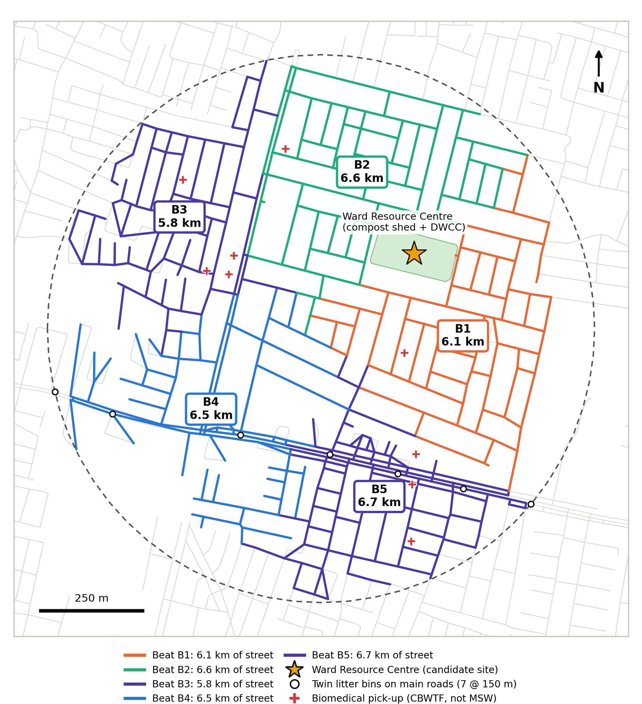
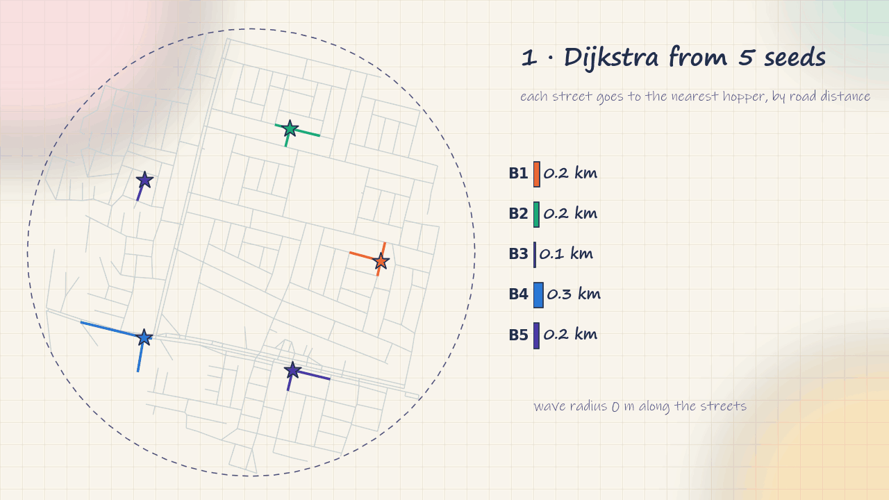

Design calculations
Every number in my proposed system, worked out step by step.
0All results at a glance
| # | Calculation | Method | Result |
|---|---|---|---|
| 1 | Waste generated | 16,565 people × 0.45 kg × 1.2 | 8.9 t/day |
| 2 | Bin sizes | V = m / ρ × safety factor | 10 + 15 + 5 L |
| 3 | Number of hoppers | N = SF / XW = 3,613 / 855 | 4.2 → 5 + 1 |
| 4 | Route efficiency | 31.7 km ÷ (31.7 + 12.4) km | 72 % |
| 5 | Compost shed | 3.58 t/d ÷ 1.5 t/m × 45 days | 107 m · 0.1 ha |
| 5 | C/N mix | (15 + 50x)/(1 + x) = 25 | x = 0.4 |
| 6 | Transport | 6.7 t × 21 km → 2.6 t × 21 km | 141 → 56 t-km |
| 7 | Diversion | (3.58 + 1.38 + 1.34) / 8.95 | 8 % → 70 % |
| 8 | Payback | ₹89.1 lakh ÷ ₹45.5 lakh/yr | ~2 years |
1How much waste?
Nobody weighs Kardhani's waste, so I estimated it the way the CPHEEO manual does: people × waste per person, plus a share for shops and streets.
Waste generated today (2026)
15,675 × 1.028²16,565 people16,565 × 0.45 kg7.45 t/dayComposition (Prajapati et al. 2021 for Jaipur, and the CPHEEO manual): wet/biodegradable 50 % (4.47 t), inert dust and sweepings 25 % (2.24 t), plastic 9 %, paper 8 %, metal 4 %, textile/other 3 %, glass 1 %.
Forecast: with population +2.8 %/yr and waste per person +1.33 %/yr (CPHEEO), Kardhani will make 16.5 t/day by 2041, almost double. My Ward Resource Centre site is sized with room for that.
2Calculation 2: sizing the bins (four streams)
A bin must hold the waste between two pickups, with spare room. Volume = mass ÷ density × safety factor.
Typical home: 5 people × 0.45 kg = 2.25 kg/day
1.125/300 × 27.5 L → 10 L green0.56×2/100 × 1.2514 L → 15 L blue3How many hoppers? N = SF / XW
This is the fleet equation from Worrell & Vesilind.
Step by step
234 / 0.87270 customers/loadb = 270/390 mind30 minY = a + c(b+d) + e + f + g: 480 = 20 + c(120) + 20 + 30 + 30a = start-up, e = finish, f = breaks, g = off-route timec = 3.17 loads/day
X = 3.17 × 270855N = (3,613 × 7) / (855 × 7)4.2 → 5 + 1 spare = 64Routes on the real street map
I downloaded Kardhani's street network from OpenStreetMap using the Python library OSMnx. To a computer a street map is a graph: junctions are nodes (399) and street segments are edges (557), each with a length. Total street length = 31.7 km.
Step 1: split the streets into 5 balanced beats
I used a balanced network-Voronoi partition:
- Place 5 seed junctions spread around the ward (on a 380 m ring).
- Give every street segment to the seed that is nearest by road distance (shortest path along streets, Dijkstra's algorithm), not by straight-line distance.
- If one beat has too much street, add a small "penalty" to its seed so it gives up border streets; repeat until the largest beat is within 6 % of the average.
- Move each seed to the centre of its beat (the network medoid) and repeat.
Result: 5 beats of 5.8, 6.1, 6.5, 6.6 and 6.7 km of street. Because assignment is by road distance, every beat is one connected patch with no overlap, which is Worrell's first routing rule.

Step 2: the Chinese postman problem
A collection vehicle must drive every street (like a postman), not just visit points. Euler's rule: you can drive every street exactly once and come back only if every junction has an even number of streets. Junctions with an odd number (dead ends, T-junctions) force you to repeat some streets. The fix is to pair up the odd junctions and repeat the shortest paths between each pair. That repeated driving is called deadhead.
Chinese postman on a small graph
A route that drives every street exactly once and returns to the start exists only when every junction has an even number of streets (an Eulerian graph). Example with street lengths:
Make it Eulerian
Kardhani is the same problem at full size: 318 odd junctions, paired by shortest road paths.

Route efficiency
31.7 + 12.444.1 km31.7 / 44.172 %5The compost shed
Wet waste is composted in windrows under a roof: long piles, turned regularly so air reaches the microbes (aerobic, so no bad smell).
Sizing the windrows
0.80 × 4.47 (20 % rejected as unsuitable)3.58 t/day(3+1)/2 × 1.53.0 m²3.0 × 0.51.5 t/m3.58 / 1.52.4 m/day2.4 × 45107 m0.30 × 3.581.07 t/day ≈ 390 t/yrC/N ratio: why I add dry leaves
(15 + 50x)/(1 + x) = 25 → 15 + 50x = 25 + 25xx = 0.40.4 × 3.58: from park leaves + sawdust from Kalwar Road furniture shops≈ 1.4 t/dayNext to the shed, a Dry Waste Collection Centre (≈ 290 m², baler + weighing scale) sorts 1.4 t/day of recyclables. It is run by a registered co-op of the same kabadiwalas and waste pickers who do this work today, so they get fixed wages and safety gear instead of losing their livelihood.
6Transport and disposal
Tonne-km saved
6.7 t × 21 km141 t-km/day2.6 t × 21 km56 t-km/day(6.7 − 2.6) / 6.7−61 %Hoppers unload straight at the Ward Resource Centre, so the open roadside points and empty-plot dumps can be closed. One covered truck a day takes the residue. Once wet waste is removed, the dry residue is a much better fuel for the RDF/WtE plant, and only ≈ 0.9 t/day of inert rejects needs a lined landfill cell. At city level, the 20.3 lakh t of legacy waste can be cleared by biomining.
7Where the 8.9 t/day goes: 8 % → 70 %
Diversion = composted + recycled + reused, divided by total. Today: (0.30 + 0.45) / 8.95 = 8 %. Mine: (3.58 + 1.38 + 1.34) / 8.95 = 70 %. Today's split is based on the city's plant capacities (NGT order); it is an estimate, not a measurement.
8Cost and payback (₹ lakh, 2026 prices, indicative)
| One-time cost | ₹ L | Yearly benefit / cost | ₹ L/yr |
|---|---|---|---|
| 6 twin-compartment e-hoppers (× 4.5) | 27.0 | Compost 390 t × ₹3,000/t | 11.8 |
| Bin sets (wet + dry + small boxes), 3,313 houses × ₹250 | 8.3 | Govt. Market Development Assistance ₹1,500/t | 5.9 |
| Compost shed 0.1 ha (shredder, sieve) | 30.0 | Recyclables 503 t × ₹8/kg | 40.2 |
| Dry waste centre (baler, scale) | 15.0 | Less transport 85 t-km/day × ₹12 | 3.7 |
| Litter bins + drain screens | 2.8 | User charge ₹50/house/month, 80 % pay | 15.9 |
| Awareness, app, cameras | 6.0 | Minus running cost (12 staff, power, repairs) | −32.0 |
| Total | 89.1 | Net benefit | 45.5 |
Simple payback = 89.1 / 45.5 ≈ 2 years. Most of the benefit (₹40 lakh) is the sale of recyclables, which pays the waste pickers' wages. Phasing: two routes + bins + dry-waste centre first (0–6 months), all routes + compost shed (6–18 months), then refuse mixed waste and enforce bulk generators (18–36 months).
9Assumptions & notes
- Population and households are the official Ward 44 figures (Swachhtam Portal 2024), grown at 2.8 % a year to 2026.
- Waste per person 0.45 kg/day is checked against Jaipur's city average (≈1,700 t ÷ 3.9 million = 0.44). Commercial and street waste is taken as +20 %.
- Composition (50 % wet, 25 % inert) is from Prajapati et al. (2021) and the CPHEEO Manual.
- Study area: a 650 m radius around Kardhani Police Station approximates Ward 44; it is used for the street network only.
- Route pairing of odd junctions uses a greedy shortest-path method; an exact minimum-weight matching can only shorten the 12.4 km.
- C/N mix is a mass-weighted first approximation; in operation the mix is adjusted by temperature and smell.
- Today's waste split (8 % diversion) is estimated from the city's plant capacities in the NGT order of 16 July 2024.
- Costs are indicative, at 2026 prices; payback is simple payback (no discounting).
Methods: Worrell & Vesilind, Solid Waste Engineering (fleet, routing, C/N) · CPHEEO Manual 2016 · SWM Rules 2016.